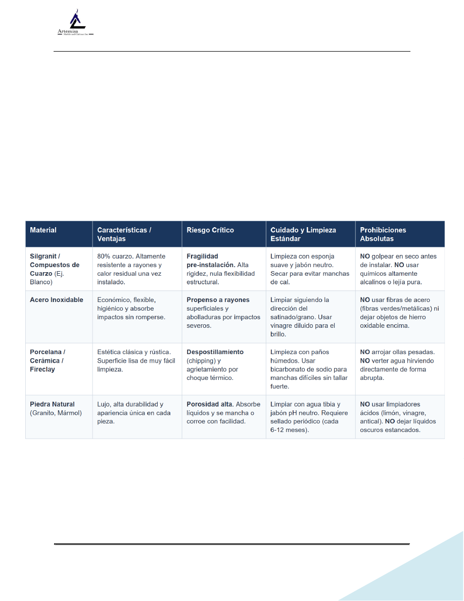

SOP-NORMA SOBRE TIPOS DE SINK Y SUS CUIDADOS
Revisión 11/10/2025
Page 1 of 5
SOP-NORMA SOBRE TIPOS DE SINK Y SUS CUIDADOS
1. Objetivo
Establecer los lineamientos estándar para la clasificación, manejo seguro, instalación preventiva
y mantenimiento correcto de los diferentes tipos de sinks, para evitar fracturas o daños por
manipulación y storage.
2. Alcance
Este procedimiento aplica para todo el personal de instalación, ayudantes, vendedores, frontdesk
y todos involucrados en el manejo de sinks.
3. Matriz de Clasificación, Ventajas y Cuidados Críticos
Estánda
Absolutas
4. Pasos Operativos Preventivos (Manejo Seguro)
4.1. Recepción y desembalaje: Inspeccionar visualmente el producto inmediatamente al recibirlo
usando una fuente
de luz directa para detectar microfisuras.
4.2. Almacenamiento temporal: Colocar el sink horizontalmente sobre superficies acolchadas
(cartón, espuma
o mantas). Nunca apoyarlo directamente sobre concreto, baldosas o superficies rígidas desnudas.
4.3. Sujeción y transporte: Manipular levantando firmemente por el perímetro exterior con
ambas manos. Queda
estrictamente prohibido levantarlo o jalarlo desde los divisores centrales en modelos de doble
tina.
4.4. Proceso de instalación: Asegurar un soporte perimetral uniforme y nivelado en la encimera
antes de aplicar los
selladores. No apretar excesivamente las grapas de fijación para evitar puntos de tensión crítica.
4. Normas por tipo de sink.
4.1. Sinks de Porcelana, Cerámica o Fireclay (Arcilla Refractaria)
Aunque el fireclay y la cerámica son famosos por su resistencia casi indestructible a los
ácidos y al calor una vez instalados, son extremadamente vulnerables durante el
transporte y la manipulación previa debido a su naturaleza vítrea.